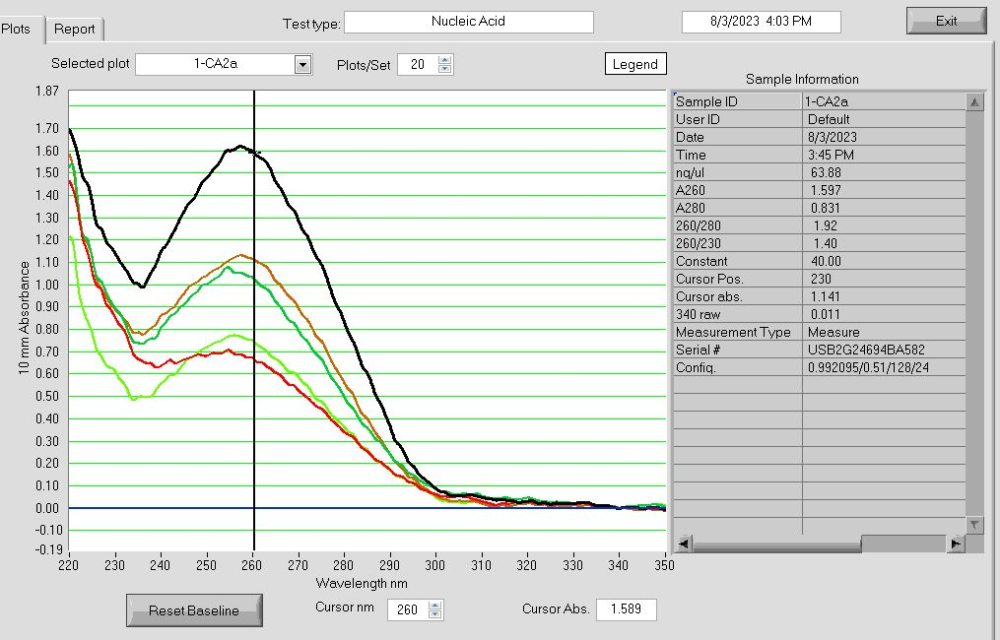
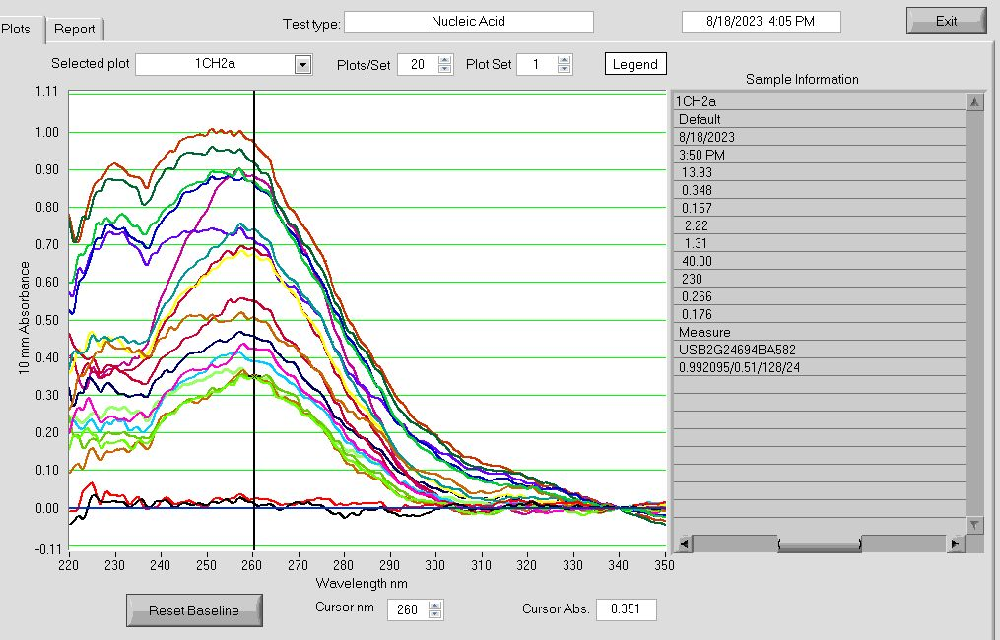

So your samples failed library prep … 😰
After shipping 20 samples to the University of Texas at Austin GSAF for TagSeq on June 7th 2023, I got a message back from them on June 28th 2023:
“Your samples failed in library prep. All 20 of them, the other samples on the 96 well plate as well as our positive control all worked great. We seen this before and it is almost always an indication that there are some type of inhibitors in your samples and it impacted the prep. Based on the quality of the RNA there is nothing more we can do for them, they will not work in the prep until they have been purified, I am not sure how they were cleaned up after the extraction but it needs to be more rigorous and be certain there are no contaminants in the RNA.”
After initial panic and frustration 😨😭… I started researching reverse transcriptase1 inhibitors and reaching out to the Roberts and Putnam Labs to ask for advice (recorded in this Roberts Lab github issue).
1 Reverse transcriptase is an enzyme that transcribes single-stranded RNA into complementary DNA (cDNA) during library prep for RNA sequencing. It was discovered in the 1970’s by David Baltimore and Howard Temin when studying retroviruses (checkout this YouTube video for a brief history on reverse transcriptase, and this YouTube video for a brief explanation of how it is used to turn mRNA to cDNA).
So what did I find, and what does this mean for my samples?
The RNA quantity, measured by Qubit Fluorometer, is good. And the RNA quality, measured by UT GSAF Bioanalyzer, is also good. The issue is that there is something else in the sample that is preventing the reverse transcriptase from generating the cDNA.
Assessing Purity
Nanodrop purity targets2:
2 Check out Assessing RNA quantity and purity with Nanodrop by TopTipBio
260/280 (protein purity) 1.80 - 2.00
260/230 (salts purity) 2.00 - 2.20
⚠️ Phenol Contamination may manifest in a 260/280 ratio greater than 2.00 !
“A 260/280 ratio greater than 2.0 does NOT indicate the presence of especially high quality DNA, it most often reflects residual contaminants, such as phenol.” -(“Ultraviolet Spectrophotometry - an Overview | ScienceDirect Topics” n.d.)
“Ultraviolet Spectrophotometry - an Overview | ScienceDirect Topics.” n.d. Accessed August 22, 2023. https://www.sciencedirect.com/topics/biochemistry-genetics-and-molecular-biology/ultraviolet-spectrophotometry.” … samples with purity ratios that range from 1.8 to 2.0 are typically considered pure. Although purity ratios are very useful and informative, they do not always provide a complete picture of sample purity.”
“Residual chemicals from nucleic acid extraction processes (such as guanidine salts or phenol) or cell components that co-extract with the nucleic acids (such as protein) can artificially inflate the A260 value.”
Zymo OneStep PCR Inhibitor Removal Kit
I first tried purifying sample RNA using the Zymo OneStep PCR Inhibitor Removal Kit on a subset of the samples.
I followed the kit instructions, and assessed the samples for purity using a Nanodrop.
- 
-
RNA Nanodrop absorbance plot after passing Zymo DNA/RNA Quick Miniprep Plus extracted RNA samples through the Zymo OneStep PCR Inhibitor Kit. Run 03AUG2023.
| sample-ID | date | ng-uL | A260 | A280 | 260-280 | 260-230 | kit |
|---|---|---|---|---|---|---|---|
| 1-CA2a | 8/3/2023 | 63.88 | 1.597 | 0.831 | 1.92 | 1.40 | OneStepPCRInhibitor |
| 1-CH2a | 8/3/2023 | 26.87 | 0.672 | 0.340 | 1.97 | 0.79 | OneStepPCRInhibitor |
| 1-Ea | 8/3/2023 | 44.54 | 1.114 | 0.562 | 1.98 | 1.25 | OneStepPCRInhibitor |
| 1-PA2a | 8/3/2023 | 41.26 | 1.031 | 0.498 | 2.07 | 1.15 | OneStepPCRInhibitor |
| 1-PH1a | 8/3/2023 | 30.24 | 0.750 | 0.362 | 1.97 | 1.64 | OneStepPCRInhibitor |
Even after running samples through the Zymo OneStep PCR Inhibitor Removal Kit, The 260/230 ratios are all below the target of 2.0, indicating contamination by salts. Any 260/280 protein ratios OVER 2.0 may indicate contamination by phenols, which absorb between 280-300nm wavelengths. So… be suspicious when you see at 260/280 ratio higher than 2.0!
The Zymo rep responded with the following advice:
“The guanidine salts in our DNA/RNA Shield and DNA/RNA Lysis Buffer could be the reason of increased A230. We see this happening most often when small impurities (e.g., cell debris, protein aggregation) were transferred from sample processing and got stuck on the column. They would absorb buffers and release them during elution. Ways to avoid this include increasing the amount of DNA/RNA Shield used during processing, reducing sample input, and transferring only a fraction of sample (e.g.,500 µl from 800 µl) from the BashingBead tube to avoid debris. You can also further purify your existing eluted samples with either the RNA Clean & Concentrator that is on the way to you, or by following the”Liquids/Reaction Clean-up” procedure included in the Appendices section Quick-DNA/RNA Miniprep Plus’s protocol.”
Zymo RNA Clean & Concentrator Kit
I next tried to purify the RNA with the Zymo RNA Clean & Concentrator Kit:
- 
-
RNA Nanodrop absorbance plot after passing Zymo DNA/RNA Quick Miniprep Plus extracted RNA samples through the Zymo RNA Clean & Concentrator Kit. Run 18AUG2023.
| sample-ID | date | ng-uL | A260 | A280 | 260-280 | 260-230 | kit |
|---|---|---|---|---|---|---|---|
| 2-PA1a | 8/18/2023 | 34.73 | 0.868 | 0.461 | 1.88 | 1.14 | RNAClean&Concentrate |
| 2-Ea | 8/18/2023 | 20.28 | 0.507 | 0.273 | 1.86 | 1.19 | RNAClean&Concentrate |
| 2-Ea | 8/18/2023 | 13.78 | 0.345 | 0.137 | 2.52 | 1.98 | RNAClean&Concentrate |
| 3-PA1a | 8/18/2023 | 29.59 | 0.740 | 0.372 | 1.99 | 1.64 | RNAClean&Concentrate |
| 4-CA1a | 8/18/2023 | 34.63 | 0.866 | 0.472 | 1.83 | 1.16 | RNAClean&Concentrate |
| 4-Ea | 8/18/2023 | 16.98 | 0.424 | 0.201 | 2.12 | 1.77 | RNAClean&Concentrate |
| 3-Eb | 8/18/2023 | 22.01 | 0.550 | 0.239 | 2.30 | 1.47 | RNAClean&Concentrate |
| 3-CH2a | 8/18/2023 | 36.81 | 0.920 | 0.494 | 1.86 | 1.06 | RNAClean&Concentrate |
| 1-Ea | 8/18/2023 | 26.94 | 0.674 | 0.331 | 2.04 | 1.50 | RNAClean&Concentrate |
| 3-CA1b | 8/18/2023 | 14.02 | 0.350 | 0.148 | 2.36 | 1.80 | RNAClean&Concentrate |
| 2-CA2a | 8/18/2023 | 39.03 | 0.976 | 0.524 | 1.86 | 1.07 | RNAClean&Concentrate |
| 3-PH1a | 8/18/2023 | 14.13 | 0.353 | 0.128 | 2.76 | 2.29 | RNAClean&Concentrate |
| 2-PH2a | 8/18/2023 | 15.61 | 0.390 | 0.181 | 2.16 | 1.67 | RNAClean&Concentrate |
| 4-PA2a | 8/18/2023 | 28.58 | 0.715 | 0.378 | 1.89 | 0.98 | RNAClean&Concentrate |
| 1-CH2a | 8/18/2023 | 13.93 | 0.348 | 0.157 | 2.22 | 1.31 | RNAClean&Concentrate |
| 1-PH1a | 8/18/2023 | 27.61 | 0.690 | 0.320 | 2.15 | 1.84 | RNAClean&Concentrate |
| 2-CH1b | 8/18/2023 | 18.28 | 0.457 | 0.219 | 2.09 | 1.46 | RNAClean&Concentrate |
| 1-PA2a | 8/18/2023 | 35.33 | 0.883 | 0.414 | 2.13 | 2.38 | RNAClean&Concentrate |
| 4-PH1b | 8/18/2023 | 13.48 | 0.337 | 0.139 | 2.43 | 1.87 | RNAClean&Concentrate |
| 1-CA2a | 8/18/2023 | 42.86 | 1.072 | 0.525 | 2.04 | 1.93 | RNAClean&Concentrate |
| 4-CH1a | 8/18/2023 | 28.95 | 0.724 | 0.362 | 2.00 | 1.41 | RNAClean&Concentrate |
P.S. I made these pretty tables based off this article by Little Miss Data
The 260/280 ratios over 2.0 may indicate worse phenol contamination!
Did the RNA Clean & Concentrate Kit improve the samples that had already been through the OneStep PCR Inhibitor Removal Kit?
| sample-ID | date | ng-uL | A260 | A280 | 260-280 | 260-230 | kit |
|---|---|---|---|---|---|---|---|
| 1-CA2a | 8/3/2023 | 63.88 | 1.597 | 0.831 | 1.92 | 1.40 | OneStepPCRInhibitor |
| 1-CH2a | 8/3/2023 | 26.87 | 0.672 | 0.340 | 1.97 | 0.79 | OneStepPCRInhibitor |
| 1-Ea | 8/3/2023 | 44.54 | 1.114 | 0.562 | 1.98 | 1.25 | OneStepPCRInhibitor |
| 1-PA2a | 8/3/2023 | 41.26 | 1.031 | 0.498 | 2.07 | 1.15 | OneStepPCRInhibitor |
| 1-PH1a | 8/3/2023 | 30.24 | 0.750 | 0.362 | 1.97 | 1.64 | OneStepPCRInhibitor |
Nanodrop Results from OneStep PCR Inhibitor Removal
| sample-ID | date | ng-uL | A260 | A280 | 260-280 | 260-230 | kit |
|---|---|---|---|---|---|---|---|
| 1-CA2a | 8/18/2023 | 42.86 | 1.072 | 0.525 | 2.04 | 1.93 | RNAClean&Concentrate |
| 1-CH2a | 8/18/2023 | 13.93 | 0.348 | 0.157 | 2.22 | 1.31 | RNAClean&Concentrate |
| 1-Ea | 8/18/2023 | 26.94 | 0.674 | 0.331 | 2.04 | 1.50 | RNAClean&Concentrate |
| 1-PA2a | 8/18/2023 | 35.33 | 0.883 | 0.414 | 2.13 | 2.38 | RNAClean&Concentrate |
| 1-PH1a | 8/18/2023 | 27.61 | 0.690 | 0.320 | 2.15 | 1.84 | RNAClean&Concentrate |
Nanodrop Results from RNA Clean & Concentrate
The RNA Clean & Concentrator improved the 260/230 ratios for samples 1Ea, 1CH2a, 1CA2a. 1PA2a & 1PH1a which had already been passed through the Zymo OneStep PCR Inhibitor Removal Kit.
The 260/280 ratios are suspiciously high, making me wonder about phenol contamination... However, the Zymo Kit is phenol-free, so the only source of phenol would be from the samples themselves. We’ll find out for sure when we send in the purified samples for another attempt at TagSeq Library Prep by UT GSAF.
RNA Clean & Concentrator wins
| sample-ID | date | ng-uL | A260 | A280 | 260-280 | 260-230 |
|---|---|---|---|---|---|---|
| 10AaDNA | 8/24/2023 | 177.55 | 3.55 | 1.89 | 1.87 | 1.02 |
| 6AaDNA | 8/24/2023 | 140.97 | 2.81 | 1.49 | 1.89 | 1.84 |
| 10AaRNA | 8/24/2023 | 41.71 | 1.04 | 0.49 | 2.11 | 2.19 |
| 6AaRNA | 8/24/2023 | 56.00 | 1.40 | 0.63 | 2.20 | 2.05 |